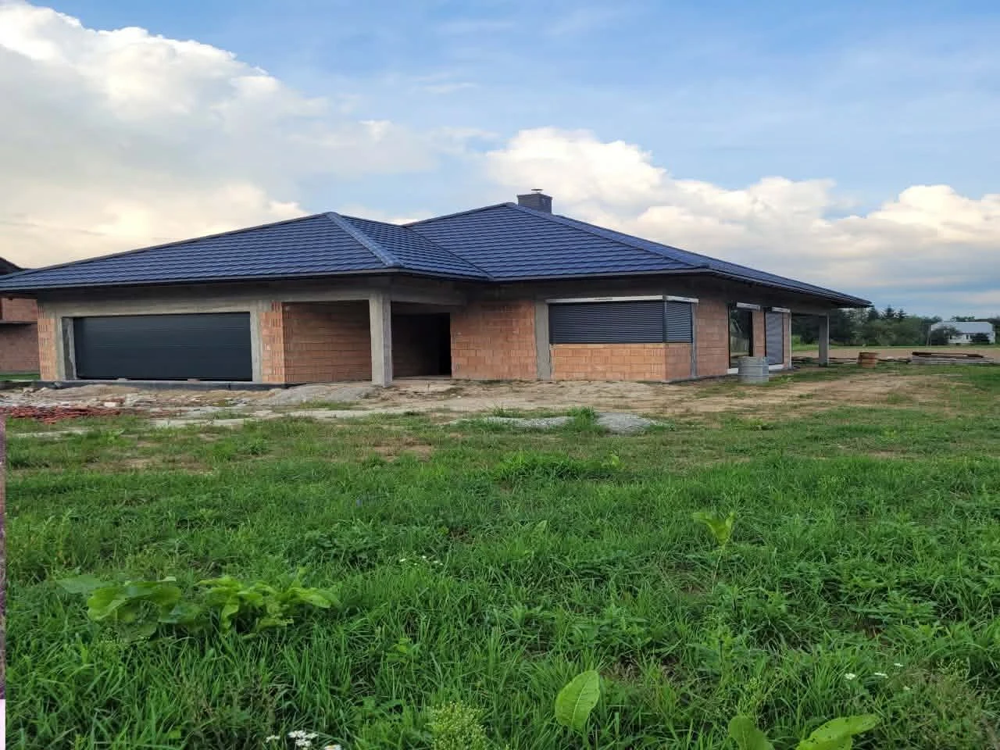

Więźby i konstrukcje dachowe
Wykonanie konstrukcji dachu oraz uzgodnionych prac murarskich związanych z jego budową.

B-Projekt · MAŁOPOLSKA
Od więźby po pokrycie i detale wykończenia.
Powierz swój dach wykonawcy z 15-letnim doświadczeniem.
01 / USŁUGI DEKARSKIE
Budujemy dachy głównie na domach prywatnych. Ustalamy zakres prac i sposób rozliczenia, a następnie przechodzimy do realizacji.
Wykonanie konstrukcji dachu oraz uzgodnionych prac murarskich związanych z jego budową.
Przygotowanie dachu i montaż pokrycia zgodnie z ustalonym zakresem realizacji.
Wykonanie obróbek, które dopełniają pokrycie i wykończenie dachu.
Estetyczne domknięcie prac dekarskich i dopracowanie widocznych detali.
02 / NASZE REALIZACJE
Prawdziwe zdjęcia z realizacji B-Projekt.
Wybierz zdjęcie, aby zobaczyć szczegóły.
03 / WYNAJEM RUSZTOWAŃ
Oferujemy wynajem rusztowań aluminiowych i systemowych. Podaj lokalizację, planowany termin oraz zakres prac — omówimy dostępność i warunki wynajmu.
04 / O B-Projekt
B-Projekt to usługi dekarskie oparte na 15-letnim doświadczeniu w branży.
Zajmujemy się konstrukcjami i pokryciami dachowymi oraz ich wykończeniem. Współpracę opieramy na ustalonym zakresie prac, jasnych rozliczeniach i sumiennym wykonaniu.
Omówmy Twoją inwestycjępraktyki w branży dekarskiej
Zakres prac i sposób rozliczenia omawiamy przed rozpoczęciem.
Liczy się konstrukcja, pokrycie i każdy etap wykończenia.
Kontaktujesz się z nami w sprawie swojego dachu lub wynajmu rusztowania.
BLISKO TWOJEJ INWESTYCJI
Obsługujemy klientów w czterech powiatach Małopolski.
05 / ZACZNIJMY OD ROZMOWY
B-Projekt
Świniary 3, 32-709 Drwinia